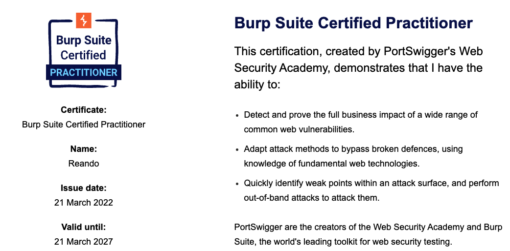
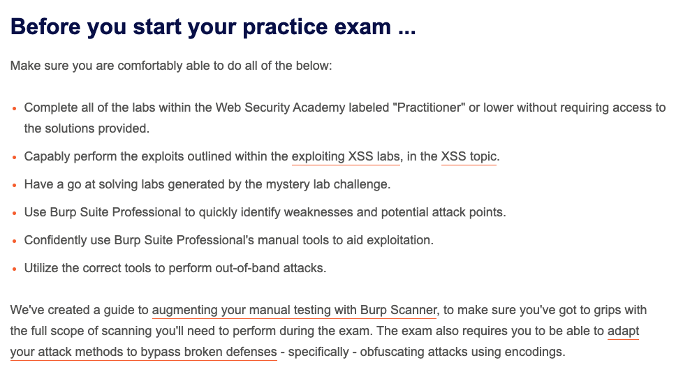
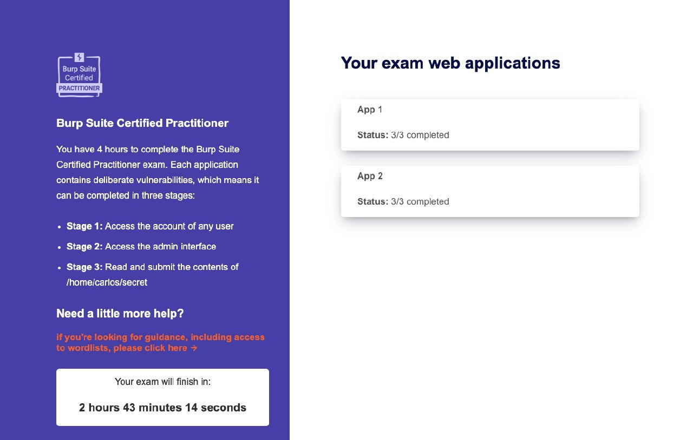

What is Burpsuite Certified Practitioner!
Introduction
The BurpSuite certification is a medium/hard CTF/exam where puts your web skills tested.
It is a four-hour exam and by passing it you’ll be able to demonstrate the ability to:
- Detect and prove the full business impact of a wide range of common web vulnerabilities - such as XSS, SQLi, OWASP Top 10 and HTTP Request Smuggling.
- Detect and prove the full business impact of a wide range of common web vulnerabilities - such as XSS, SQLi, OWASP Top 10 and HTTP Request Smuggling.
- Quickly identify weak points within an attack surface, and perform out-of-band attacks to attack them, using manual tools to aid exploitation.

How the exam is structured
You will have four hours to complete the Burp Suite Certified Practitioner exam. There are two applications, and each application contains deliberate vulnerabilities. This means that each application can be completed in three stages:
- Stage 1: Access any user account.
- Stage 2: Use your user account to access the admin interface at /admin, perhaps by elevating your privileges or compromising the administrator account.
- Stage 3: Use the admin interface to read the contents of /home/carlos/secret from the server's filesystem, and submit it using "submit solution".
How to prepare the Exam
These are just my personal thoughts and opinions that led me to pass the exam. If you already have experience with web application testing, I suggest do the labs anyway or at least to see how portswigger academy allows you to exploit server-side vulnerabilities via their exploit server.
Another point to consider is that vulnerabilities such as XSS or other client-side vulnerabilities require real interaction with a user/bots, as explained in the exam. I suggest you to learn or deepen how to create a working PoC to steal for example cookies, reset token, to perform clickjacking via an iframe and send it to the victim user.
Before giving the Burp Suite Certified Practitioner exam, I always recommend that you complete or at least be at or below the "Practitioner" level. You can also use the Practice exam to prepare for the exam. It's simulate an environment of a real test situation, and will cover a variety of vulnerability classes and exploits.
Another test you can take that I recommend before taking the exam is the mystery challenge. You can choose the difficulty level and the topic of interest and portswigger will start the lab. Otherwise choosing only the level and selecting any, the challenge in my opinion becomes much more truthful and similar to the exam.

Very Important TIPS:
We know that the 2 applications that you need to hack involve different steps and for each step we have a goal. If the first step is to steal the session/impersonate a user, I suggest to divide all vulnerabilities into different types, client-side and server-side.
The three steps must be completed in order. This means that if you are in an application, attempting to enter the admin interface is a waste of time if you do not yet have access to a user account, or maybe attempting to read files if you do not have access to an administrator account.
Be careful because sometimes there could be rabbit holes. If you see that you are stuck at some point or maybe you do not get anything on the exploit server or burp collaborator, take a break and start from another bug, do not focus too much, if it does not come, once you identify the vulnerability, the exploitation is pretty much straightforward, maybe some bypass could be needed.
My Exam
On my first attempts, I got through the entire first application very quickly, with more than half the time remaining, it certainly felt like I should be able to finish the exam. Well, things did not work out well. I spent way too much time on what I thought was the right path, and in the final it turned out to be a rabbit hole.
When I only had one step left, I got stuck on the last step of the second application. Even when I had more than an hour to figure it out, it finally ended in a failed attempt. 5/6 Boom failed.
After many attempts, this time I was very determined to not fall down another time on rabbit hole.
The exam applications are randomly selected at the beginning, so you do not get the same applications.
This time I really went straight through all the weak spots and the 2 applications.
Boom, after more than 2 hours left I was done. 6 out of 6 vulnerabilities.
Final Tips
- Do the free Web Security Academy Labs to prepare you for the exam
- Do the practice exam
- Do the mystery challenge
- The time looks enough, but you have 6 bug to identify and exploit, be ready with all the environment for not loosing time.
- Don’t fall and do not create your own rabbit holes :)
- Take notes during your exam, it will help to mapp the application and the exam
- If you fail, spend more time in the Web Security Academy
My Credential Burpsuite Certified